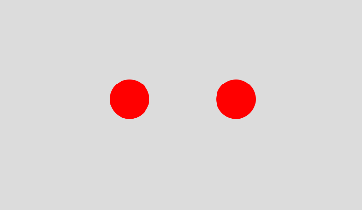
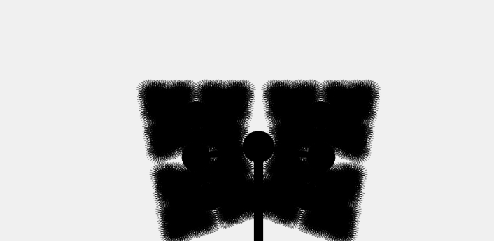
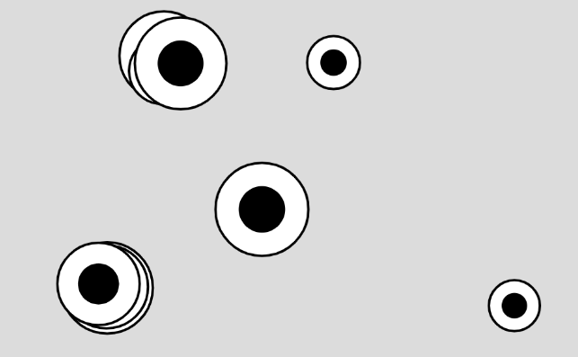
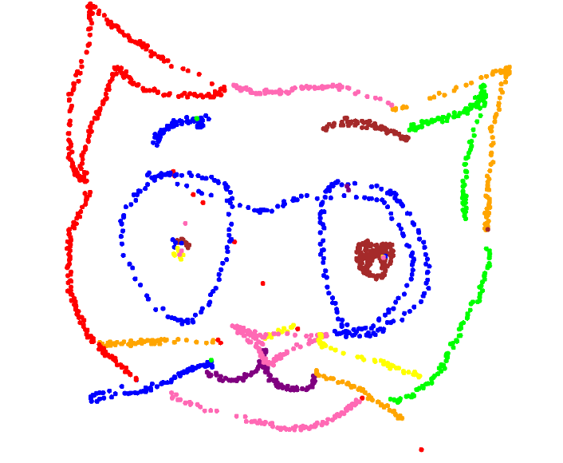

Mis proyectos y experimentación digital
Damian Maturana Contreras
Este portafolio tiene como principal objetivo mostrar cual fue mi experiencia dentro de la asignatura de imagen escrita y dejar registro de mis actividades de ingenio y exploración propia, disfruta de un vistazo!!
Probemos con patrones y movimientos en un canvas, ¿Que se podría hacer?

¿Se podría interactuar en algún patrón o movimiento constante y cambiar alguna propiedad? hagamos un clic entonces
Probemos con hacer aparecer algo, ¿se mantiene, desaparece, como es?

Cambiar propiedades, cambia resultados, probemos con algún sistema de experimentación, quizá podría aparecer algo totalmente deforme e interesante

Estoy aburrido, quiero ver algo caotico e impredesible… algo que parezca vivo y se mueva por voluntad propia

Espero no haber consumido mucha de tu memoria RAM con lo anterior jaja, probemos algo de libertad creativa, un canvas… un lienzo, ¡¡hagámoslo literal! ¡¡Dibuja!!